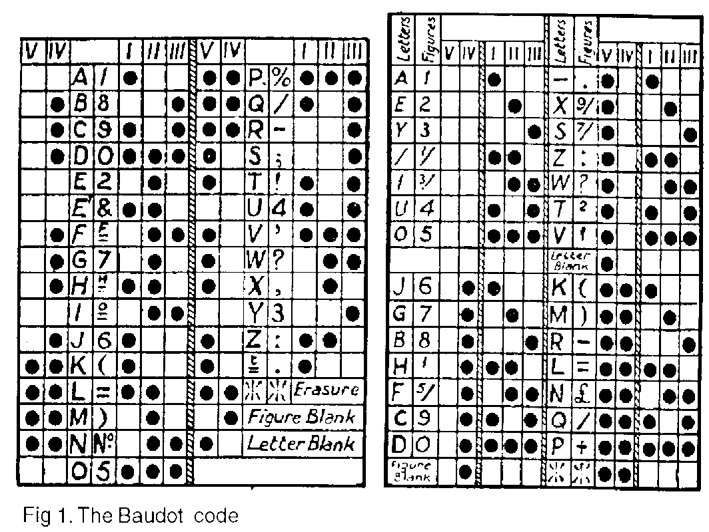
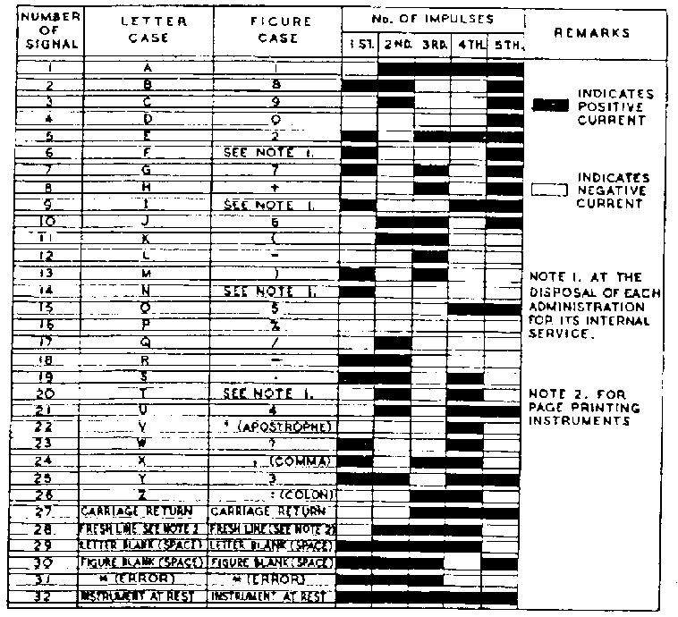
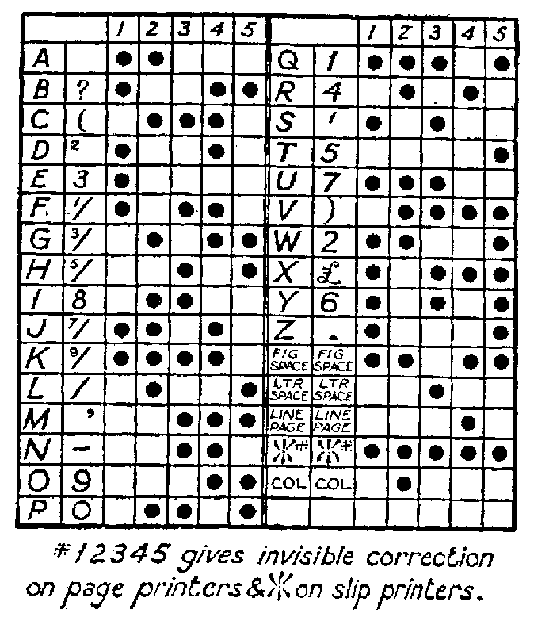
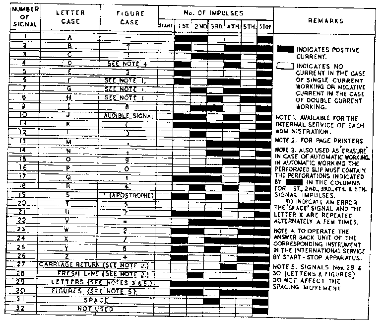
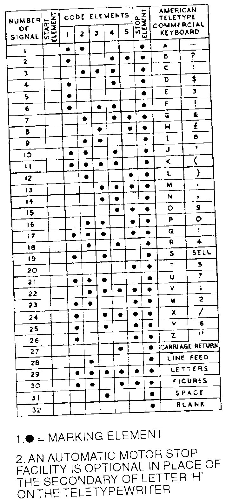

Five-Unit Codes
President, British Amateur Radio Teledata Group (BARTG)
© 1999 — Reprinted by permission via Larry Rice VK6CP
In articles that mention RTTY codes there is usually reference to Baudot, Murray and ITA2 codes. These codes are often taken to be identical and interchangeable. Even “respectable” engineering journals do not seem to understand the fundamental differences between the different codes. For any two equipments to satisfactorily inter-operate, it is essential that the code in use is thoroughly specified and understood, and the same at each end. The purpose of this article is to explain the similarities, and the differences, between the codes, and to indicate their relationship to the Radio Amateur.
All codes have their strengths and their weaknesses. For instance, one of the strengths of Morse code is that commonly used letters have short codes, making them easier to send. Whereas one of its weaknesses is the difference in length between the code for the shortest character ‘E’, and the code for the longest character ‘0’, which takes 19 times as long to transmit. This vast difference in length made the Morse code difficult, but certainly not impossible, to mechanise. For example, the Creed Morse printer, developed in the early 1900s, read and printed in plain language, a perforated Morse tape at speeds of up to 100 words per minute.
It had long been realised by many telegraphic engineers, that the real answer to the mechanisation of telegraphy was to use a code in which every character took the same time to transmit. A so-called “constant length” code. With 26 letters in the alphabet, it was only natural that the most popular codes would all consist of five signalling elements, with each element taking one of two states, e.g. +ve/−ve, off/on, etc. Therefore the number of available combinations is two raised to the power five:
By reserving two of the combinations for use as non-printing shift control characters, it is possible to associate a numeral or punctuation mark with every letter of the alphabet, effectively doubling the capacity of the code. Naturally, this will slightly reduce the rate at which the message is transmitted, but the machinery could be designed to insert these shift characters automatically, thereby reducing the effort on the part of the operator.
Baudot Multiplex System
The earliest, successful, printing telegraph system which used a five-unit code, was the Baudot Multiplex System, which was devised by Emile Baudot, of the French Telegraphic Service, in 1874. This is a time division multiplex system, and utilises (1) certain printing details of the Hughes printing telegraph instrument, (2) the distributor arrangements invented by Bernard Meyer in 1871 which were employed in a Morse multiplex system, and (3) a five-unit code devised by Johann Gauss and Wilhelm Weber. The system was adopted in France in 1877, and thereafter its use in France was extensive, and it was to some extent adopted in other countries. The British Post Office adopted the Baudot system for use on a simplex circuit between London and Paris in 1897, and subsequently made considerable use of duplex Baudot systems on their Inland Telegraph Services.
The Baudot distributor could be designed so that it could be used by from two to six operators, with the quadruple Baudot system, using four operators, adopted as the standard installation for use in the British Post Office. The distributor, consisting of copper segments and rotating brushes, successively connected each operator to the line, for a time long enough to transmit the five units corresponding to one character. Additional segments transmitted correcting currents, from one end to the other, to maintain synchronism between the sending and receiving stations. Hence the Baudot system was one of the earliest five-unit synchronous systems.
The standard speed of transmission, by each operator, was 180 characters per minute, each character being set-up manually on a small piano-like keyboard, which only had five keys. The keys were so arranged that once pressed down, they latched down, and were only released by the distributor when all the five elements of the character had been transmitted.
The operator was given an audible indication of the keyboard unlocking by means of what is known as the “cadence signal”. This signal came from the operation of the electromagnet which released the keys. The manipulation of the Baudot keyboard called for a high degree of operating skill, since a definite, unvarying, rhythmic speed of signalling was necessary.
Figure 1 shows the allocation of the Baudot code which was employed in the British Post Office for continental and inland services. It will be observed that a number of characters in the continental code are replaced by fractionals in the inland code. Code elements 1, 2 and 3 are transmitted by keys 1, 2 and 3, and these are operated by the first three fingers of the right hand. Code elements 4 and 5 are transmitted by keys 4 and 5, and these are operated by the first two fingers of the left hand.

Because the combinations were set-up manually, the code was so arranged that the finger movements to be performed by the operator were as evenly divided as possible between the right and left hands, and also as few as possible for those characters having the greatest frequency of occurrence. This ensured the minimum fatigue of the operator.
A fine example of Baudot equipment may be seen in the Science Museum in London. Until the autumn of 1997, another fine example was to be seen in the BT Museum in London. Unfortunately, this museum is now closed to the public.
The Baudot code was eventually standardised for multiplex systems as the International Telegraph Alphabet number 1 (ITA1), and is shown in figure 2.

Murray Type Printing Multiplex System
This system was designed in 1901 by Donald Murray, a New Zealand sheep farmer, as a combination of the best features of the Baudot multiplex system and the Murray automatic system. Murray also employed a five-unit code, but the allocations of the signal combinations differed very considerably from that used in the Baudot code, as is shown in figure 3.

The main reason for this was that he chose to use a keyboard layout similar to that of a typewriter, which relieved the operator of the burden of setting up the individual code elements. This allowed Murray to allocate the codes so that those characters having the greatest frequency of occurrence were given a combination which involved the least number of mechanical operations, thereby reducing the wear in the equipment.
At the transmitting end, the Murray system comprised: (1) A keyboard perforator, which produced a tape in which the code was perforated transversely. The feed holes being in line with the front edges of the perforations, so that the direction in which the tape should be read was at once apparent, and; (2) A transmitter which could be mounted adjacent to the perforator in order to give the minimum possible distance between the perforating and transmitting mechanisms. With this arrangement the distance was reduced to only 16 character spaces.
In the transmitter, the five contact levers which sensed the perforations in the tape were connected to individual segments on a distributor, very similar in principle to the Baudot transmitter distributor. Additional segments on the distributor operated an electromagnet which stepped the tape forward after the line brush had passed the segments connected to the five contact levers. A novel feature on the transmitter was a start-stop device which sensed the size of the tape loop between the perforator and the transmitter, and held the five sensing levers in the space position, thereby sending spacing currents to line until the tape became slack. Mutilation of the tape, or disconnection of the transmitter, was thus avoided.
At the receiving end, the Murray system comprised: (1) A reperforator which produced perforated tape corresponding to the original sending tape, and which could then be used for onward transmission to further stations, and; (2) A printing receiver which interpreted the incoming line signals, and printed the characters on a paper tape. The Creed multiplex printer was commonly used for this purpose, which employed a series of bell-cranks and a rotating typehead, as used on the later models 3 and 7 series of teleprinters. Either the reperforator, the printing receiver, or both, could be connected to the receiving distributor as required by the local circumstances.
Start-Stop Systems
Synchronous printing telegraph systems employing constant length codes, such as the Baudot and Murray, were a great advance over the previous telegraph systems. However, they suffered from a lack of flexibility, and required very accurate means for maintaining accurate synchronism between the transmitting and receiving instruments. To overcome these disadvantages, a number of inventors experimented with the idea of starting and stopping the receiving mechanism for each character. For this purpose, a “start” signal was transmitted immediately preceding the code elements, and a “stop” signal was transmitted immediately the code elements had been transmitted.
The code employed was still a five-unit code, with the start signal equal in duration to one code element, and the stop signal being in some cases equal in duration to one code element, and in other cases more than one element — often 1.5 elements. For this reason the code is sometimes referred to as a 7½ unit code. The transmitting and receiving instruments were now arranged to have a definite rest position, at which point they were precisely in phase with each other in readiness for their respective timing cycles when released.
Because the transmitter and receiver effectively re-synchronised at the start of each character, it was no longer necessary for the speed of the instruments to be very accurately controlled, and simpler centrifugal governors which maintained the speed to within +/− 0.5% were now adequate. This implies the possibility of a noticeable speed difference between the two ends of a system, so the receiving mechanism is arranged to rotate for a shorter time period than the transmitter mechanism. The time difference usually being equal to one element period, but sometimes only equal to half of one element period. By this means the receiver was always at rest before the start of the next character, even with speed errors greater than 0.5%.
The earliest type of start-stop instrument was introduced in America in 1907 by Charles L. Krum and his son Howard Krum. It was manufactured by the Morkrum Company, which would later become the Teletype Corporation, and began to find practical application about 1920. The instrument employed a typewriter style keyboard, and printed the received signals direct onto paper tape, without requiring the intermediate use of perforated tape at either end of the system. It was capable of working at a speed of 40 words per minute, in either simplex or duplex.
In 1922, Frederick George Creed in Croydon designed a start-stop receiver, and a few years later produced a combined transmitter and receiver having a typewriter-style keyboard. This machine, known as the Model 3 and operating at 65.3 words per minute, printed the messages directly onto a gummed paper tape and was widely adopted for the British Post Office Public Telegram service. The year 1931 saw the introduction of the first Creed Model 7 page printing teleprinter, operating at the now standard speed of 66.6 words per minute.
Early start-stop machines tended to use versions of the Murray code but, in the 1930s, the CCITT standardised on the International Telegraph Alphabet number 2 (ITA2), shown in figure 4, for start-stop telegraph systems. The Americans chose to use a variation of ITA2 known as the Teletypewriter code, which is shown in figure 5.


Summary
Virtually all mechanical teleprinter equipment which remains in Amateur hands dates from after the early 1930s and was, therefore, designed in accordance with CCITT standards, and uses either ITA2 or its American equivalent.
The only teleprinters which used the Murray code, and may still exist in ever decreasing numbers, are the very early Creed models 3A, 3W, 3X, 3Y and 3Z tape printing machines. The later Creed models 3B, 3C, 3D and 3E used the standard ITA2 code.
No teleprinters were ever produced which used the Baudot code, but that is hardly surprising when one considers that the Baudot code was used in a very early synchronous system, and all teleprinters, as we now know them, operate on the start-stop (asynchronous) principle. Also, as far as this writer is aware no computer programmer has yet implemented the Baudot code or the Murray code for the Amateur home computer market, no matter what may be found in advertisements in the Amateur press. For those readers who wish to learn more about the history of telegraphic communications, and the ingenuity of the engineers and inventors, this writer would recommend a trip to a library, where you should ask for: Telegraphy by J. W. Freebody, published by Sir Isaac Pitman in 1958.
via Larry Rice VK6CP — 25 August 1999
Copyright © 2011 George Hutchison W7TTY & Bill Bytheway K7TTY